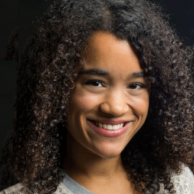
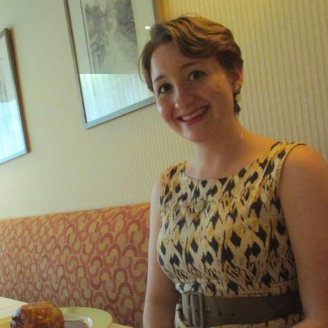

Cochairs

Rebecca Rago
Cochair

Grace Segers
Cochair
About Us
Entertainment Board works to bring entertainment to students and students directly to the entertainment! We work in designing events that highlight all parts of the entertainment industry including movies, television, sports, broadway, writing, and more. On campus, we plan lectures and comedy shows. Off campus, we host trips to plays, sporting events, shows, and more.
Members of the board get experience in selecting talent, trips, and events. Those members are also involved in advertising, setting up, and executing events.
In 2014, Entertainment board welcomed Jeffrey Tanbur, Kenan Thompson, Erik Griffin, and more! We also received the Synergy Award from Tufts University for bringing Phil Kaye to the University. The award was shared with fraternity Sigma Phi Epsilon.